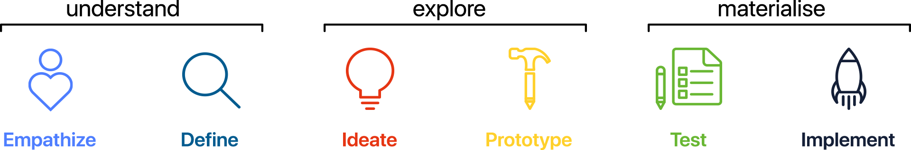
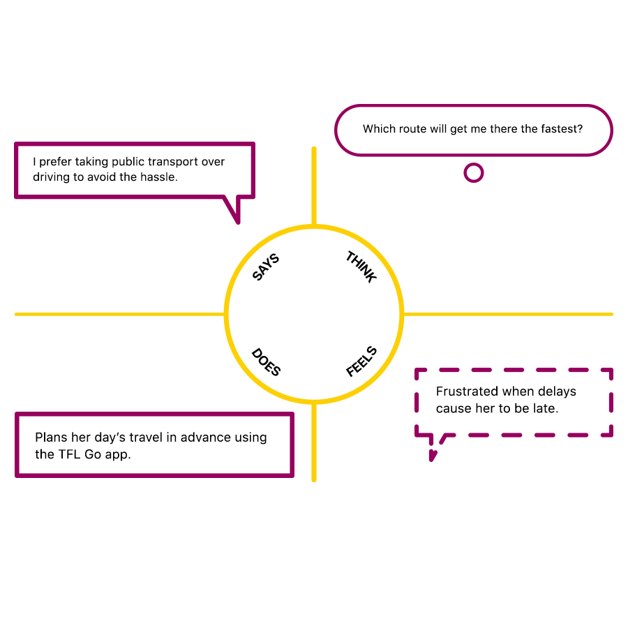
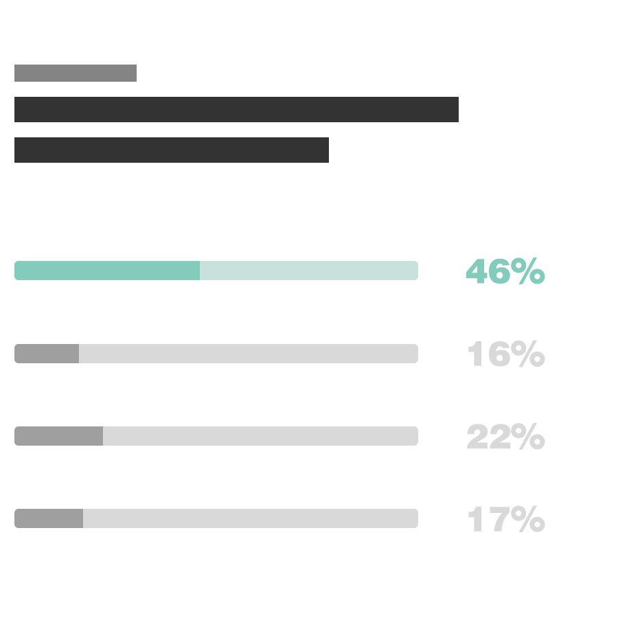
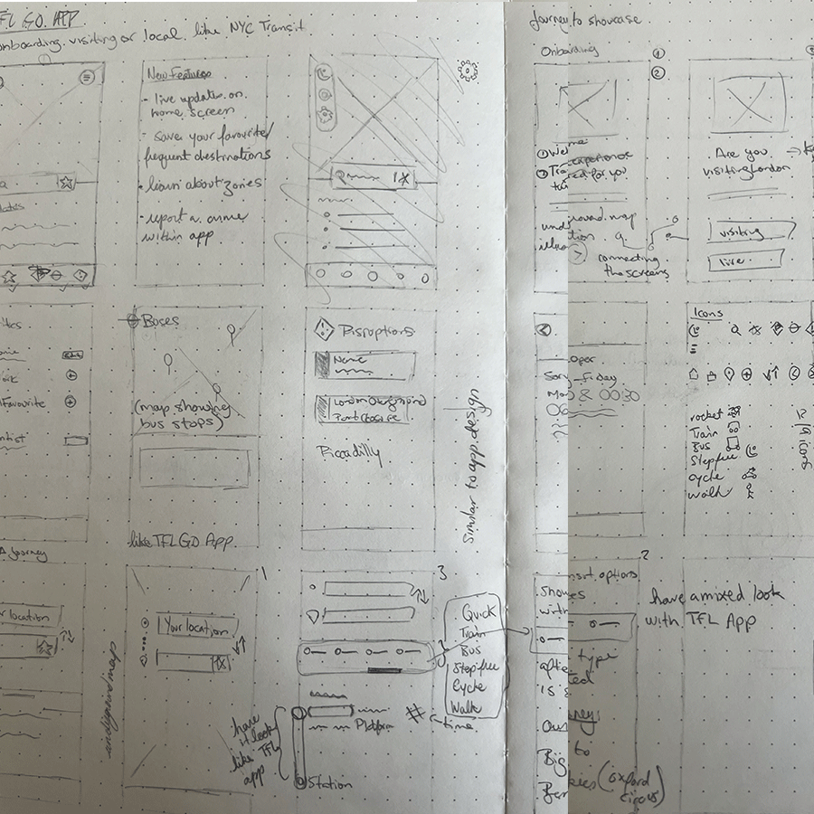
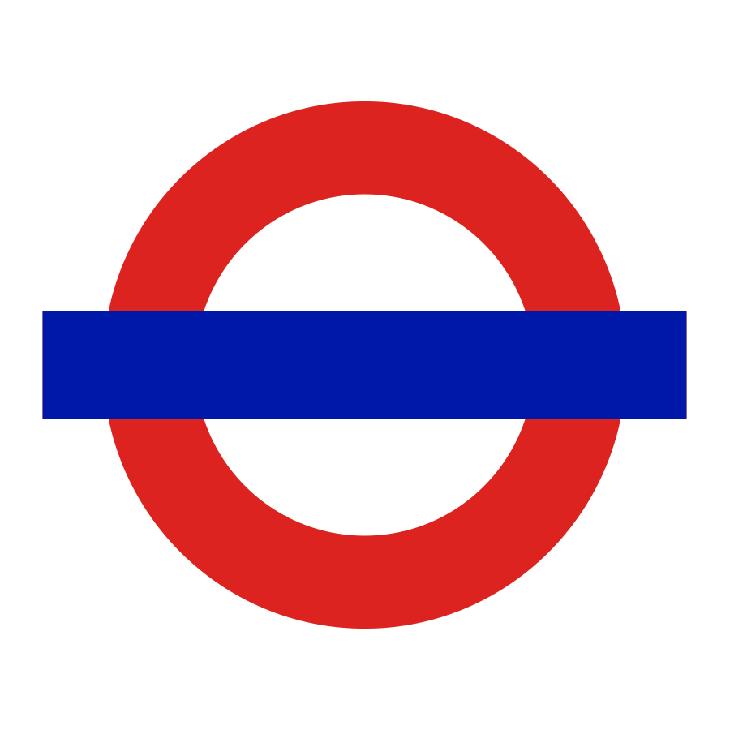
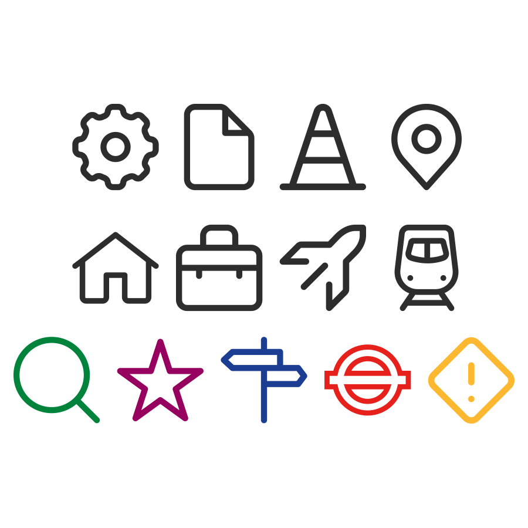
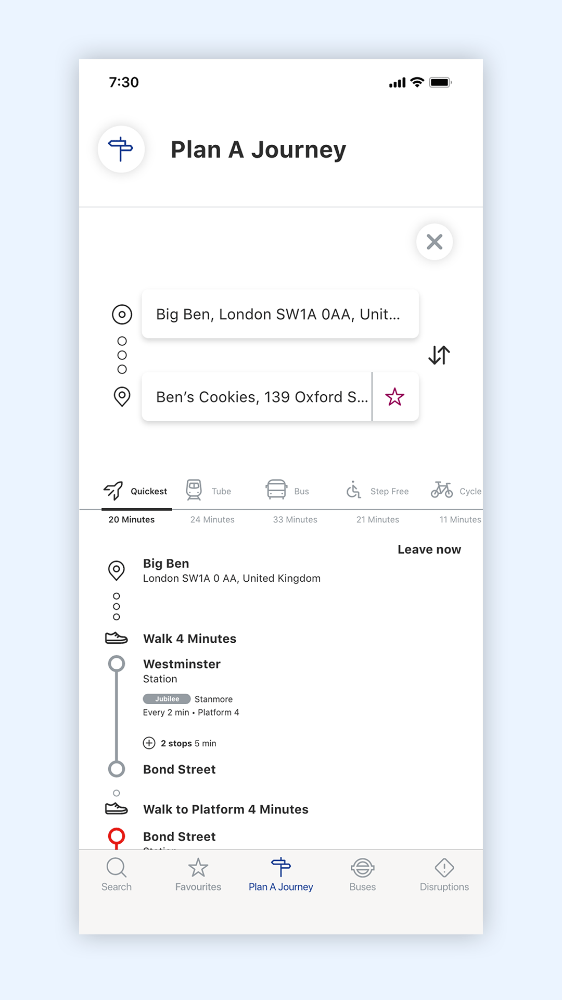
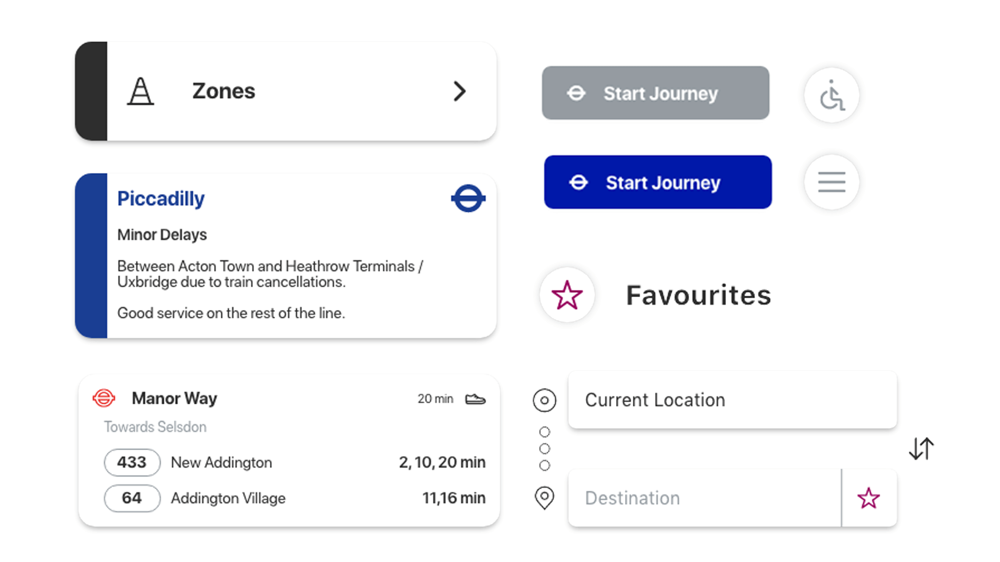

Client
TFL
Role
UX/ UI
Project Type
Mobile App
Date
3 Months
The Brief
The TFL Go app redesign aimed to enhance the user experience for both regular commuters and first-time tourists, ensuring seamless navigation through London’s extensive transport system. The project focused on improving real-time updates, simplifying fare zone information, and enhancing wayfinding features to make journey planning more intuitive. Through user research, key pain points were identified, such as fare zone confusion and inaccurate travel updates, leading to a refined design that prioritized clearer navigation, improved accessibility, and personalized travel tips.
The Process





56%
Increase in App-Related Travel Information Usage
Clearer navigation and user-friendly design will encourage more users to rely on the TFL Go app for real-time updates, reducing dependency on station announcements.
38%
Higher User Retention Rate
A smoother, more personalized app experience will keep users returning for regular updates, particularly for commuting to work or school.
47%
Decrease in Fare Zone Confusion
Improved visual design and clearer explanations of fare zones will help 47% of users who struggled with this issue, leading to better understanding and fewer inquiries.
To explore the process in more detail, visit my Behance page.
Balancing simplicity and guidance, the challenge lies in making the app intuitive for both first-time tourists and regular commuters, ensuring it caters to both without overwhelming or under-informing


Efficent journey details

"The redesign makes travelling around London easier with clearer fares and real-time updates."
Sara

Interactive Prototype
The Brief
Business & User Goals
The business goal for the TFL project was to enhance the user experience for passengers navigating London’s extensive transport system. The objective was to make the TFL Go app more intuitive and accessible, improving the overall journey planning process for both regular commuters and tourists. The goal was to address key pain points, such as fare zone confusion and real-time updates, and ensure users could travel with confidence.
The user goal was to simplify the complex transportation network and make it easier for passengers to understand pricing, navigate large stations, and get accurate travel information in real time. This would ultimately make the app more trustworthy and reliable for all users, from daily commuters to tourists unfamiliar with the system.
The Process
The research process began with a survey to capture users' experiences with the TFL system and app. We asked questions related to usage frequency, fare zone confusion, and frustrations with real-time updates. The results informed our design approach, showing that 68% of users struggled with fare zones and 68% encountered delays that weren’t accurately reflected.
We also conducted interviews with both regular commuters and tourists to better understand their journey planning behaviour and the challenges they faced. This helped us create targeted solutions for each persona, ensuring the app could cater to a variety of needs.
Who Did You Speak To?
I spoke to a mix of users: Regular commuters, who are familiar with the system but want better real-time updates and fare zone clarity. Tourists and first-time users, who need clear step-by-step guidance and simplified information. TFL staff, who provided insights into what was feasible within the existing infrastructure.
Big Revelations from the Research?
A significant revelation was the lack of clarity around fare zones and pricing, which was a huge barrier for 68% of users. Additionally, the research showed that real-time updates were often inaccurate, which negatively impacted user experience. This led us to prioritize a clear, simple explanation of fare zones and to focus on improving update accuracy within the app.
How Did the Research Steer the Direction of the Project?
The research steered us to focus on improving navigation and real-time updates, which would directly address the pain points identified by users. The goal was to make the app both simple for first-time users and efficient for regular commuters.
Time, Struggles & Lessons
If I had more time, I would have conducted additional testing to explore how various user groups interact with the new features, especially for first-time users and tourists.
One of the biggest struggles was ensuring that the app could cater to both regular commuters and tourists—users with drastically different needs. Regular commuters often want quick, straightforward information, while tourists need more guidance and orientation. It took significant effort to balance simplicity with clarity.
What I learned from this experience is the importance of continuous iteration and testing. Even after launching. User feedback is invaluable in understanding the real-world impact of design choices.
Final Thoughts
The new TFL app design successfully addressed key user frustrations, especially around fare zones and wayfinding. By simplifying the user interface and adding personalized travel tips, the app became more accessible to both tourists and regular commuters. The changes led to a more intuitive, user-friendly app, improving overall user satisfaction and retention.